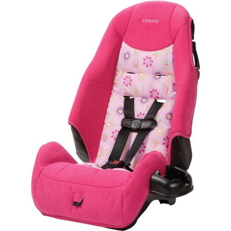
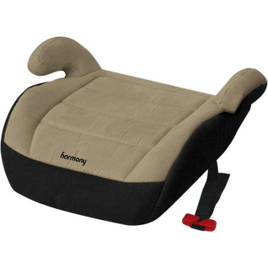

Booster Seats
As is the case with rear and forward-facing car seats, there are different types of booster seats:
- Booster Seat with High Back: are intended to be used in situations where the height of the child needs to be elevated in order to properly fit seat the belt of the car they are riding in. Additionaly, they provide head and neck support in the event the vehicle does not have high seat backs or head rests.
- Backless Booster Seat: is used to elevate the height of the child so that the seat belt properly fits. These types of car seats are also best used in vehicles that have head rests.
- Combination Car Seat: can transition from a forward-facing seat, that incldues a harness and tether into a booster eat.
- All-in-one Seat: accomondates rear-facing, foward-facing and booster-style stages. Booster-style seats are described on the Booster Seat page.
All car seats manual should be checked for the individual manufacturer's guidlines.

